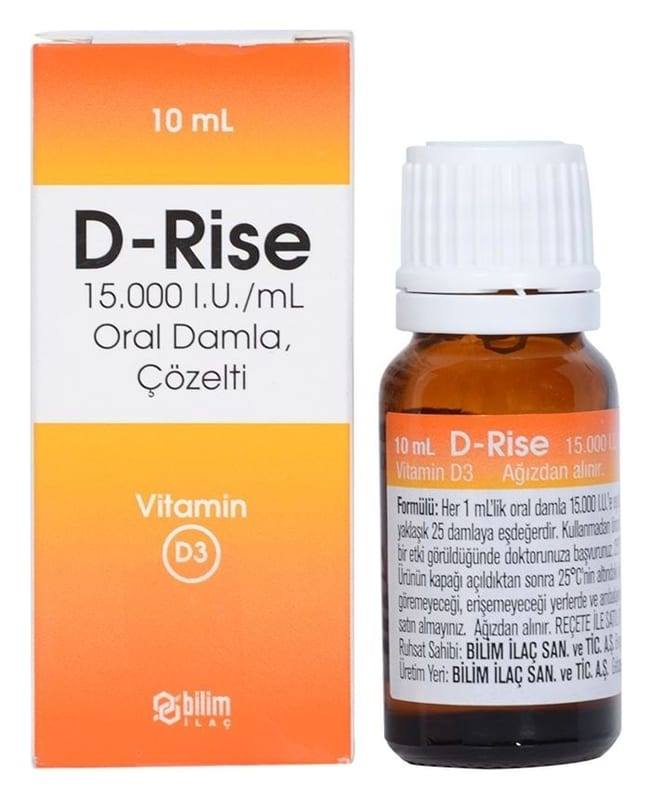

D-Rise 15.000 I.U./ml Oral Damla, Çözelti, 1 Adet

Ne için kullanılır
KT · Bölüm 1D-RİSE, etkin madde olarak, kolekalsiferol (vitamin D3 (koyun yünü kaynaklı)) içerir. D- RİSE damlanın her mL’sinde 0,375 mg vitamin D3 bulunur ve her mL yaklaşık 25 damlaya eşdeğerdir.
D-RİSE, karton kutuda, LDPE damlalıklı, HDPE beyaz plastik kapaklı 10 mL’lik, renksiz berrak sıvı içeren Tip III amber renkli cam şişelerde, kullanma talimatı ile birlikte sunulmaktadır.
D-RİSE, D vitamini eksikliği tedavisinde, idamesinde ve profilaksisinde endikedir.